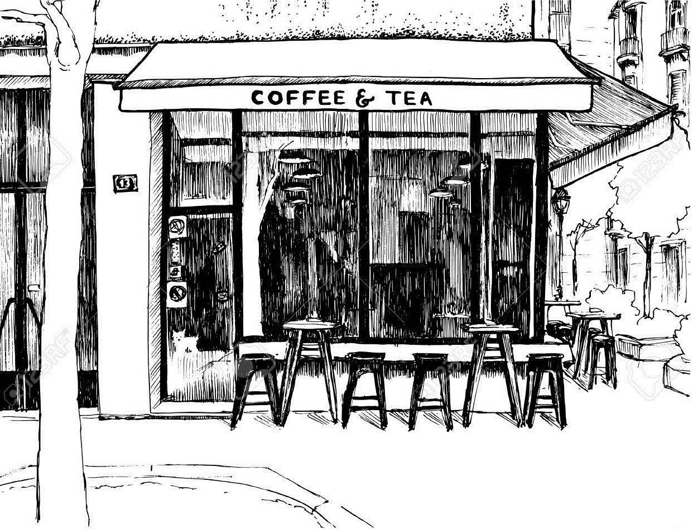

Fresh scones are baked daily, without fail and served with lashings of strawberry, raspberry or blackcurrant jam and cream.
Our Victoria sandwich is split fresh and filled with strawberry jam, a fabulous colour comes from being baked with the finest free range local Sandystone eggs.
Tayberry brownies, raspberry and lime drizzle cake, fruity flapjack and crisp shortbread are amongst our other offerings.
Lunchtime baps are filled with our own salt beef or cheese and gooseberry chutney.
We make our own range of fruit cordials and ice-cream - maybe the best you'll taste!
